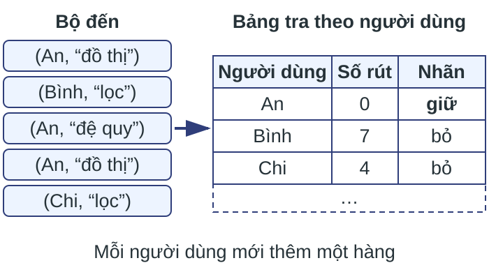
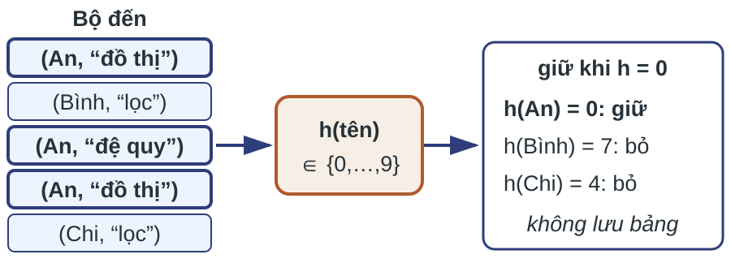
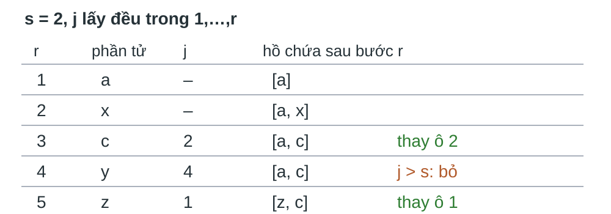
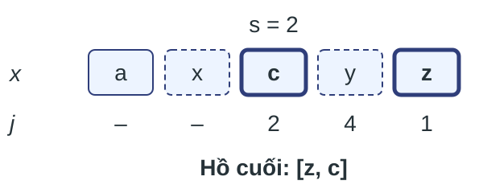
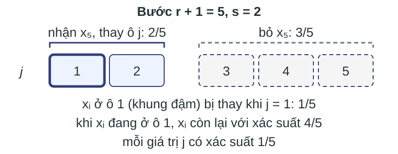
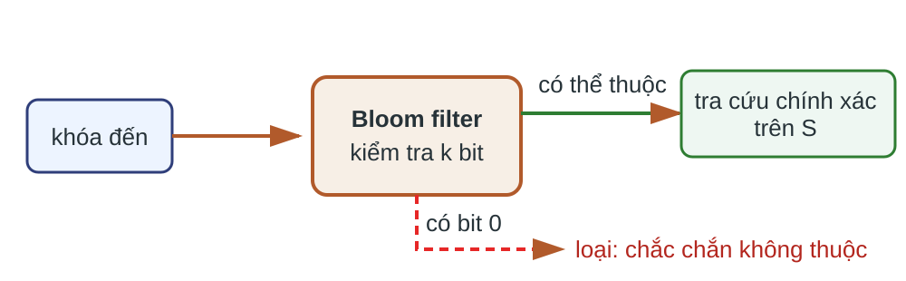
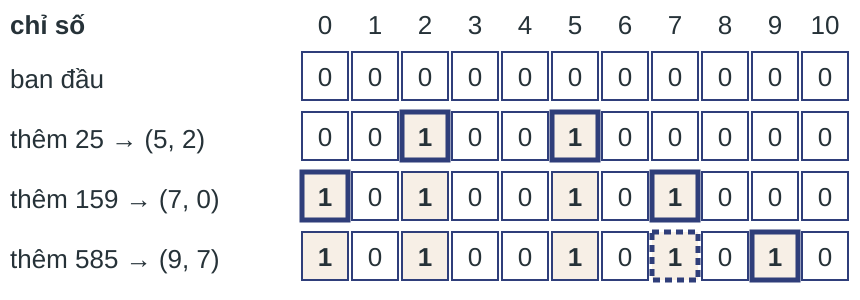
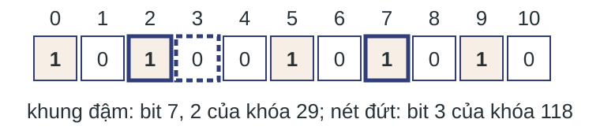
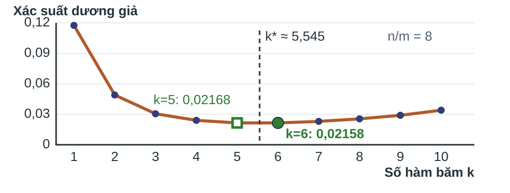

Dòng dữ liệu: mô hình, lấy mẫu và lọc
Băm khóa giữ trọn nhóm, hồ chứa giữ mẫu cỡ cố định, mảng bit loại hầu hết khóa ngoài tập.
Bài 08 · Giải thuật nền tảng của Khoa học dữ liệu
Học kỳ 1 · Năm học 2026–2027
Trường Đại học Công nghệ · Đại học Quốc gia Hà Nội
Tiên quyết và quy ước
Nhắc lại: hàm băm trả về cùng một giá trị cho cùng một khóa (Bài 02, 05).
Nhắc lại: $\Pr[A_1\cap\cdots\cap A_\ell]=\prod_i\Pr[A_i]$ khi $A_1,\ldots,A_\ell$ độc lập.
Nhắc lại: $(1-1/n)^n\approx e^{-1}$ khi $n$ lớn.
Ký hiệu: dòng $x_1,x_2,\ldots$, mỗi phần tử là một bộ $t$ có khóa $K(t)$; $r$ là số phần tử đã đọc.
Ký hiệu: hồ chứa (reservoir) $W$ có $s$ ô; Bloom filter có $n$ bit, $k$ hàm băm, tập $S$ gồm $m$ khóa.
Mục tiêu học tập
- Đặc tả thuật toán dòng một lượt; chọn khóa lấy mẫu cho một thống kê theo nhóm.
- Lập vết hồ chứa; chứng minh bằng quy nạp mỗi phần tử đã đọc còn trong mẫu với xác suất $s/r\ (r\ge s)$.
- Xây dựng và truy vấn Bloom filter; tính xác suất nhận nhầm khóa ngoài $S$ và số hàm băm tối ưu.
Nội dung
- Mở đầu
- Mô hình tính toán trên dòng
- Lấy mẫu theo khóa
- Lấy mẫu hồ chứa
- Lọc thành viên bằng Bloom filter
- Tổng kết và chuyển tiếp
- Bài tập vận dụng
Đọc trước: Leskovec, Rajaraman, Ullman, Mining of Massive Datasets (MMDS), ấn bản 3, Chương 4, §§4.1–4.3, tr.131–142; §4.5.5, tr.148–150.
Vấn đề trung tâm
Nhu cầu: lấy mẫu, lọc dòng chưa biết độ dài, không lưu cả dòng.
- Đọc một lần nên chỉ trả lời từ trạng thái giữ lại.
- Hàm băm đều giữ trọn mỗi người dùng với xác suất $1/10$; mẫu có $\approx r/10$ bộ.
- Hồ chứa rút số đều, độc lập và giữ mỗi phần tử đã đọc với xác suất $s/r\ (r\ge s)$.
- Bloom filter $8\cdot10^9$ bit, sáu hàm băm đều, độc lập, không loại khóa nào của $10^9$ khóa, nhận nhầm $\approx2\%$.
3.Lấy mẫu theo khóa
Muốn ước lượng tỷ lệ truy vấn lặp của mỗi người dùng, phải giữ hoặc bỏ trọn từng người.
Sai lệch khi lấy từng bộ · Bảng nhãn và hàm băm · Tính nhất quán theo khóa · Chọn khóa · Cỡ mẫu
Ví dụ: ba bộ truy vấn của An
Muốn ước lượng tỷ lệ truy vấn tìm kiếm lặp khi giữ mỗi bộ độc lập với xác suất $1/10$.
An gõ “đồ thị” hai lần, “băm” một lần; tỷ lệ lặp $1/2$: 1 trong 2 truy vấn được gõ lại.
| Được giữ | Xác suất |
|---|
| cả hai bộ “đồ thị” | $\frac{1}{10}\cdot\frac{1}{10}=\frac{1}{100}$ |
| đúng một bộ “đồ thị” | $2\cdot\frac{1}{10}\cdot\frac{9}{10}=\frac{18}{100}$ |
| bộ “băm” | $\frac{1}{10}$ |
Nếu “đồ thị” có trong mẫu, xác suất có đủ hai bản là $1/19$.
Sai lệch của mẫu từng bộ
Một người dùng có $u$ truy vấn xuất hiện một lần, $d$ truy vấn xuất hiện hai lần.
| Loại | Trong dòng | Kỳ vọng còn hai bản | Kỳ vọng còn một bản |
|---|
| một lần | $u$ | $0$ | $u/10$ |
| hai lần | $d$ | $d/100$ | $18d/100$ |
$\dfrac{d/100}{u/10+d/100+18d/100}=\dfrac{d}{10u+19d}\ne\dfrac{d}{u+d}$
Với $u=d=1$, mẫu cho $1/29$ thay vì $1/2$; mẫu số tính cả “băm” nên khác $1/19$.
Bảng giữ hoặc bỏ theo người dùng
Nhu cầu: giữ trọn truy vấn tìm kiếm của mỗi người dùng với xác suất $1/10$.
Thuật toán. Lần đầu gặp một người, rút số đều trong $\{0,\ldots,9\}$; số $0$ ghi “giữ”, số khác ghi “bỏ”.
Bộ đến sau tra bảng, vào mẫu nếu nhãn là “giữ”.

Câu hỏi: bảng tăng theo đại lượng nào, và khi nào vượt bộ nhớ làm việc?
Hàm băm thay bảng nhãn
Bảng thêm một hàng cho mỗi người dùng mới, không bị chặn; $10^8$ người dùng cần 1,6 GB.
Hàm băm $h$ tương tự bảng nhưng không lưu: cùng tên luôn cho cùng giá trị.

Giữ bộ khi $h=0$; $h(\text{An})=0$ nên cả ba bộ của An vào mẫu.
Thuật toán: lấy mẫu theo khóa
Đầu vào: bộ $t$ có khóa $K(t)$; số ngăn $b\ge1$, ngưỡng $0\le a\le b$; hàm $h$ từ khóa vào $\{0,\ldots,b-1\}$.
Giả thiết: với mỗi khóa $K$, $h(K)$ đều trên $\{0,\ldots,b-1\}$ theo cách chọn $h$; $h$ cố định suốt dòng.
Đầu ra: mẫu gồm đúng các bộ $t$ có $h(K(t))<a$.
LẤY-MẪU-THEO-KHÓA(t; a, h)
nếu h(K(t)) < a:
đưa t vào mẫu
Phép quyết định là so sánh $h(K(t))$ với $a$, không lưu gì theo khóa; tính đều do cách chọn $h$.
Tính đúng: lấy mẫu theo khóa
Mệnh đề. Với $h$ cố định, mọi bộ cùng khóa cùng được giữ hoặc cùng bị bỏ.
Chứng minh. $K(t)=K(t')$ nên $h(K(t))=h(K(t'))$; hai phép so sánh với $a$ cho cùng kết quả.
Mệnh đề. Nếu $h(K)$ đều trên $\{0,\ldots,b-1\}$ theo cách chọn $h$, khóa $K$ được giữ với xác suất $a/b$.
Chứng minh. Đúng $a$ trong $b$ giá trị đồng khả năng nhỏ hơn $a$.
Chọn khóa lấy mẫu
Khóa nhận diện đơn vị mà thống kê gộp các bộ.
| Thống kê | Khóa |
|---|
| tỷ lệ truy vấn lặp của mỗi người | người dùng |
| số người gõ mỗi truy vấn | truy vấn |
| số lần một người gõ lại một truy vấn | (người dùng, truy vấn) |
Câu hỏi: khóa (người dùng, thời gian) có cho đúng tỷ lệ truy vấn lặp của từng người không?
Chi phí: lấy mẫu theo khóa
Mô hình: đếm phép toán mỗi bộ đến; bộ nhớ đếm bằng từ máy.
| Thành phần | Mỗi bộ | Sau $r$ bộ |
|---|
| băm khóa | 1 phép | $r$ phép |
| so sánh với $a$ | 1 phép | $r$ phép |
| tham số $h$, $a$, $b$ | — | cỡ hằng |
| mẫu đã lưu | 0 hoặc 1 bộ | kỳ vọng $ar/b$ bộ |
Cỡ mẫu tăng theo dòng; giữ ngân sách cố định phải hạ ngưỡng, và tỷ lệ khóa giảm dần.
Ngưỡng băm và khóa nhiều bộ
Câu hỏi: với $h$ nhận giá trị trong $\{0,\ldots,99\}$, để chọn 20% khóa, giữ khi $h(K)\le20$ hay khi $h(K)<20$?
Một khóa có $10^6$ bộ. Mẫu bảo đảm gì về các bộ đó, và có bảo đảm 20% số bộ không?
4.Lấy mẫu hồ chứa
Muốn giữ số phần tử cố định khi chưa biết độ dài dòng, phải thay ngẫu nhiên theo vị trí.
Mẫu cỡ cố định · Vết hai ô · Bất biến và quy nạp · Chi phí · So với mẫu theo khóa
Mẫu cỡ cố định
Mẫu theo khóa không chặn cỡ: một khóa có $10^6$ bộ, nếu được giữ, chiếm $10^6$ ô.
Muốn giữ đúng $s$ phần tử sao cho mỗi phần tử đã đọc có cùng xác suất $s/r$.
Ví dụ. $s=2$, dòng a, x, c, y, z, …: xác suất cần là $2/5$ sau 5 phần tử, $2/7$ sau 7 phần tử.
Lưu cả $r$ phần tử rồi rút $s$ thì bộ nhớ tăng theo $r$.
Ý tưởng lấy mẫu hồ chứa
Tương tự mẫu theo khóa, giữ khi một số đều không vượt ngưỡng: $j\le s$ thay cho $h(K)<a$.
Khác ở chỗ $j$ rút lại ở mỗi vị trí, và phần tử đã giữ có thể bị thay.
Với $r\le s$, đặt $x_r$ vào ô $r$; với $r>s$, rút $j$ đều trong $\{1,\ldots,r\}$ và thay ô $j$ khi $j\le s$.
Trực quan. $x_r$ vào hồ với xác suất $s/r$; ô bị thay chọn đều trong $s$ ô.
Ví dụ: vết chạy hồ chứa hai ô
Dòng a, x, c, y, z; $s=2$; một lần rút cho $j=2,4,1$ ở $r=3,4,5$.

Sau $r=5$, hồ chứa là [z, c]; phần tử x và y không còn.
Thuật toán: lấy mẫu hồ chứa
Đầu vào: dòng $x_1,x_2,\ldots$; số nguyên $s\ge1$; số rút đều, độc lập với các lần rút trước và $W$.
Đầu ra: sau $r$ phần tử, mảng $W$ chứa $\min(r,s)$ phần tử đã đọc.
HỒ-CHỨA(x₁, x₂, …; s)
r ← 0
với mỗi phần tử x đến:
r ← r + 1
nếu r ≤ s: W[r] ← x
ngược lại:
j ← số nguyên đều trong {1,…,r}
nếu j ≤ s: W[j] ← x

Một số $j$ vừa quyết định nhận ($j\le s$) vừa chọn ô bị thay.
Tính đúng: lấy mẫu hồ chứa
Mệnh đề. Nếu mỗi $j$ đều trên $\{1,\ldots,r\}$, độc lập với các lần rút trước, thì sau $r\ge s$ phần tử: $|W|=s$ và $\Pr[x_i\in W]=s/r$, $i\le r$.
Chứng minh. Quy nạp theo $r$.
Cơ sở $r=s$: cả $s$ phần tử đầu nằm trong $W$, xác suất $1=s/s$.
Bước $r\to r+1$: giả thiết quy nạp $\Pr[x_i\in W]=s/r$ với mọi $i\le r$; xét phần tử mới, rồi phần tử cũ.
Cỡ đúng $s$: mỗi bước $r>s$ giữ nguyên $W$ hoặc thay đúng một ô.
Chứng minh: xác suất có mặt, phần tử mới
Ở bước $r+1$, $j$ đều trên $\{1,\ldots,r+1\}$; $x_{r+1}$ vào $W$ khi $j\le s$.
$\Pr[x_{r+1}\in W]=\dfrac{s}{r+1}.$

Ví dụ. $s=2$: $x_5$ được nhận với xác suất $2/5$; ở vết hai ô, lần rút $j=1$ là một trường hợp nhận.
Chứng minh: xác suất có mặt, phần tử cũ
Xét $x_i$, $i\le r$; giả thiết quy nạp: $\Pr[x_i\in W\text{ sau bước }r]=s/r$.
Khi $x_i\in W$, nó bị thay đúng khi $j$ bằng ô chứa nó, một trong $r+1$ giá trị.
Do $j$ độc lập với các lần rút trước:
$\Pr[x_i\in W\text{ sau bước }r+1]=\dfrac{s}{r}\Bigl(1-\dfrac{1}{r+1}\Bigr)=\dfrac{s}{r+1}.$
Ví dụ. $s=2$, $r=4$: $\frac24\cdot\frac45=\frac25$.
Chi phí: lấy mẫu hồ chứa
Mô hình: đếm phép toán mỗi phần tử, rút một số đều tính 1 phép; bộ nhớ đếm bằng từ máy.
| Bước | Mỗi phần tử | Sau $r$ phần tử |
|---|
| tăng $r$ | 1 | $r$ |
| rút $j$ | 0 hoặc 1 | $r-s$ khi $r>s$ |
| ghi $W$ | 0 hoặc 1 | kỳ vọng $\approx s(1+\ln\frac rs)$ |
Bộ nhớ $s$ ô và bộ đếm $r$, tức $\Theta(s)$ từ máy; $O(1)$ phép mỗi phần tử trong trường hợp xấu nhất.
Hồ chứa và mẫu theo khóa
| Theo khóa | Hồ chứa |
|---|
| Cỡ mẫu | tăng theo dòng | $\min(r,s)$ |
| Nhất quán theo khóa | có | không |
| Xác suất | $a/b$ mỗi khóa | $s/r$ mỗi phần tử |
Câu hỏi: dòng $1\,000$ bộ, An có 10 bộ, hồ chứa $s=100$ ô.
Kỳ vọng số bộ của An trong hồ là bao nhiêu, và hồ có giữ trọn 10 bộ không?
5.Lọc thành viên bằng Bloom filter
Muốn loại sớm khóa ngoài tập bằng mảng bit cỡ cố định, phải chấp nhận một phần nhận nhầm.
Mảng bit và hàm băm · Không bỏ sót khóa của tập · Xác suất nhận nhầm · Số hàm băm tối ưu
Lọc theo danh sách cho phép
Muốn chỉ cho qua thư từ địa chỉ thuộc tập $S$ được phép.
$S$ có $10^9$ địa chỉ, mỗi địa chỉ từ 20 byte: lưu $S$ cần từ 20 GB.
Bộ nhớ chính 1 GB, tức $8\cdot10^9$ bit.
Tra $S$ trên đĩa cho mỗi thư đến thì quá chậm.
Ý tưởng Bloom filter
Tương tự lấy mẫu theo khóa, hàm băm thay cho bảng lưu khóa.
Khác ở chỗ mọi khóa của $S$ đặt bit 1 trước khi dòng đến.
Nhận xét. Nếu một bit tại vị trí băm của $y$ bằng 0 thì $y\notin S$.

Chỉ khóa qua bộ lọc mới cần tra $S$ trên đĩa.
Ví dụ: Bloom filter 11 bit, thêm ba khóa
$h_1(v)$: ghép các bit ở vị trí lẻ của $v$ (đếm từ phải, từ 1), lấy modulo 11.
$h_2(v)$: như $h_1$, với các bit ở vị trí chẵn.
Ví dụ. $159=10011111_2$: bit lẻ $0111_2=7$, bit chẵn $1011_2=11\equiv0$.

Thêm 585 đặt lại bit 7 đã bằng 1.
Ví dụ: Bloom filter 11 bit, kiểm tra hai khóa

| Khóa | Nhị phân | $(h_1,h_2)$ | Bit | Trả lời |
|---|
| 118 | $1110110_2$ | (3, 5) | 0 (dừng) | chắc chắn không thuộc |
| 29 | $11101_2$ | (7, 2) | 1, 1 | có thể thuộc |
29 chưa được thêm nhưng vẫn qua bộ lọc: một trường hợp nhận nhầm.
Đặc tả Bloom filter
Đầu vào: tập $S$ gồm $m$ khóa; mảng $n$ bit $B$; hàm băm $h_1,\ldots,h_k$ vào $\{0,\ldots,n-1\}$.
Đầu ra: mảng $B$ sau khi xây; với khóa truy vấn $y$, “chắc chắn không thuộc” hoặc “có thể thuộc”.
Định nghĩa. Dương giả (false positive): $y\notin S$ nhận “có thể thuộc”.
Định nghĩa. Âm giả (false negative): $y\in S$ nhận “chắc chắn không thuộc”.
Trong ví dụ 11 bit, $n=11$, $k=2$, $m=3$; khóa 29 là một dương giả.
Thuật toán: xây Bloom filter
XÂY-BLOOM(S; n, h₁,…,hₖ)
B[0…n−1] ← 0
với mỗi khóa v trong S:
với i = 1,…,k: B[hᵢ(v)] ← 1
trả B
Phép duy nhất là đặt bit thành 1; hai khóa đặt cùng một bit thì bit đó không đổi.
Chi phí: $km$ lần băm và đặt bit; bộ nhớ $n$ bit.
Thuật toán: kiểm tra thành viên
KIỂM-TRA-BLOOM(y; B, h₁,…,hₖ)
với i = 1,…,k:
nếu B[hᵢ(y)] = 0: trả “chắc chắn không thuộc”
trả “có thể thuộc”
Phép quyết định: gặp một bit 0 thì dừng và loại $y$.
Trường hợp xấu nhất: $k$ lần băm và $k$ lần đọc bit, khi $y$ qua bộ lọc.
Tính đúng: không có âm giả
Giả thiết: sau khi xây, mảng chỉ được đọc; truy vấn dùng cùng $h_1,\ldots,h_k$.
Mệnh đề. Nếu $y\in S$ thì truy vấn $y$ trả “có thể thuộc”.
Chứng minh. Khi xây, $B[h_i(y)]\leftarrow1$ với mọi $i$; không phép nào đặt bit về 0, nên vòng kiểm tra chỉ đọc bit 1.
Lưu ý: $y\notin S$ vẫn có thể nhận “có thể thuộc”, như khóa 29 với $B[7]=B[2]=1$.
Xác suất một bit bằng 1
Mô hình: $km$ lần băm, mỗi lần chọn đều một trong $n$ bit, độc lập; xét bit $c$.
Trực quan. Ném $km$ phi tiêu vào $n$ bia; một bit bằng 0 khi bia của nó không trúng.
$\Pr[B[c]=0]=\left(1-\dfrac1n\right)^{km}\approx e^{-km/n}$
Đặt $q=1-(1-1/n)^{km}$, xác suất một bit bằng 1.
Ví dụ. $n=8\cdot10^9$, $m=10^9$, $k=1$: $q\approx1-e^{-1/8}\approx0{,}1175$.
Xác suất dương giả
Khóa $y\notin S$ qua bộ lọc khi cả $k$ bit $B[h_i(y)]$ bằng 1.
$p_{FP}\approx q^k=\left[1-\left(1-\dfrac1n\right)^{km}\right]^k\approx\left(1-e^{-km/n}\right)^k=p(k)$
Xấp xỉ thứ nhất: với $X$ là số bit 1, $p_{FP}=\mathbb E[(X/n)^k]\ge q^k$.
Xấp xỉ thứ hai: $(1-1/n)^n\approx e^{-1}$ khi $n$ lớn, và $p(k)\le q^k$.
Ví dụ. $n/m=8$: $p(1)\approx0{,}1175$; $p(2)=(1-e^{-1/4})^2\approx0{,}0489$.
Ảnh hưởng của số hàm băm
Tăng $k$ giúp: khóa ngoài $S$ phải qua thêm một phép thử.
Tăng $k$ hại: thêm $m$ lần đặt bit, $q$ tăng.
Với $n/m=8$: $p(1)\approx0{,}118$, $p(6)\approx0{,}022$, $p(10)\approx0{,}034$.
Câu hỏi: với $n,m$ cố định, $p(k)=(1-e^{-km/n})^k$ tiến về đâu khi $k\to\infty$? Giải thích bằng $q$.
Số hàm băm tối ưu
Mệnh đề. Với $n,m$ cố định, $p(k)=(1-e^{-km/n})^k$ trên $k>0$ nhỏ nhất tại $k^*=(n/m)\ln2$.
Ý nghĩa: tại $k^*$, $e^{-k^*m/n}=1/2$: khoảng một nửa số bit bằng 1, và $p(k^*)=2^{-k^*}$.
Với $k$ nguyên, so $p$ tại $\max(1,\lfloor k^*\rfloor)$ và $\lceil k^*\rceil$.
Chứng minh. Đạo hàm của $\ln p(k)$ chỉ bằng 0 tại $k^*$, âm trước và dương sau $k^*$; chi tiết ở Bài tập 4.3.3.
Ví dụ: tám bit mỗi khóa
$n=8\cdot10^9$ bit, $m=10^9$ địa chỉ: $n/m=8$.

$k^*=8\ln2\approx5{,}545,\qquad p(5)\approx0{,}0217,\quad p(6)\approx0{,}0216$
Chọn $k=6$; giá trị liên tục nhỏ nhất là $2^{-5{,}545}\approx0{,}0214$.
Chi phí: Bloom filter
Mô hình: đếm phép băm và lần truy cập bit; bộ nhớ đếm bằng bit.
| Thao tác | Phép băm | Truy cập bit |
|---|
| xây | $km$ | $km$ lần ghi |
| kiểm tra, xấu nhất | $k$ | $k$ lần đọc |
| bộ nhớ | — | $n$ bit |
Câu hỏi: số địa chỉ tăng lên $2\cdot10^9$, giữ $8\cdot10^9$ bit và $k=6$.
Tính $p(6)$; số hàm băm nguyên nào tốt hơn?
7.Bài tập vận dụng
Muốn chọn khóa lấy mẫu và định cỡ Bloom filter, phải áp dụng đặc tả và công thức dương giả.
Chọn khóa · Ba và bốn hàm băm · Chia mảng bit · Số hàm băm tối ưu
Bài tập: chọn khóa lấy mẫu
Grades(university, courseID, studentID, grade): mã trường duy nhất; mã học phần, mã sinh viên chỉ duy nhất trong một trường.
Câu hỏi: với mẫu $1/20$ của dòng, chọn thuộc tính khóa để ước lượng:
- số sinh viên trung bình của một học phần, theo từng trường;
- tỷ lệ sinh viên có điểm trung bình từ 3,5;
- tỷ lệ học phần có ít nhất nửa số sinh viên đạt “A”.
Nguồn: MMDS, Bài tập 4.2.1, tr.138.
Bài tập: dương giả với ba và bốn hàm băm
Mảng $n=8\cdot10^9$ bit, tập $S$ gồm $m=10^9$ khóa (tình huống lọc thư).
Câu hỏi: tính xác suất dương giả khi dùng ba hàm băm, và khi dùng bốn hàm băm.
Nguồn: MMDS, Bài tập 4.3.1, tr.141.
Bài tập: chia mảng bit
Có $n$ bit và tập $S$ gồm $m$ khóa.
Thay $k$ hàm băm vào một mảng, chia $n$ bit thành $k$ mảng, băm một lần vào mỗi mảng.
Câu hỏi: theo $n$, $m$, $k$, xác suất dương giả là bao nhiêu? So với $k$ hàm băm vào một mảng chung.
Quy ước: $k$ chia hết $n$; các hàm băm đều, độc lập.
Nguồn: MMDS, Bài tập 4.3.2, tr.141.
Bài tập: số hàm băm tối ưu
Câu hỏi: với $n$ bit và tập $S$ gồm $m$ khóa, số hàm băm nào làm nhỏ nhất xác suất dương giả?
Dùng dạng $p(k)=(1-e^{-km/n})^k$ với $k$ thực, rồi chọn $k$ nguyên.
Nguồn: MMDS, Bài tập 4.3.3, tr.142.
Bài tập: số hàm băm tối ưu
Lời giải: đặt $\rho=m/n$, $z=k\rho$ và $\theta=e^{-z}$, xác suất một bit bằng 0, nên $z=-\ln\theta$; xét ${\lambda(k)=\ln p(k)}$.
$$\begin{aligned}\lambda'(k)&=\ln(1-\theta)+\frac{z\theta}{1-\theta}=\frac{\phi(\theta)}{1-\theta},\\ \phi(\theta)&=(1-\theta)\ln(1-\theta)-\theta\ln\theta.\end{aligned}$$
$\phi(0^+)=\phi(1/2)=0$ và $\phi''<0$ trên $(0,1/2)$: $\phi$ lõm chặt, nên $\phi>0$ ở đó; $\phi(1-\theta)=-\phi(\theta)$, nên $\phi<0$ trên $(1/2,1)$.
$\theta>1/2\iff k<k^*=(n/m)\ln2$: $p$ giảm rồi tăng, nhỏ nhất tại $k^*$, $p(k^*)=2^{-k^*}$.
Với $k$ nguyên: so $p$ tại $\lfloor k^*\rfloor$ và $\lceil k^*\rceil$, lấy 1 nếu $k^*<1$.